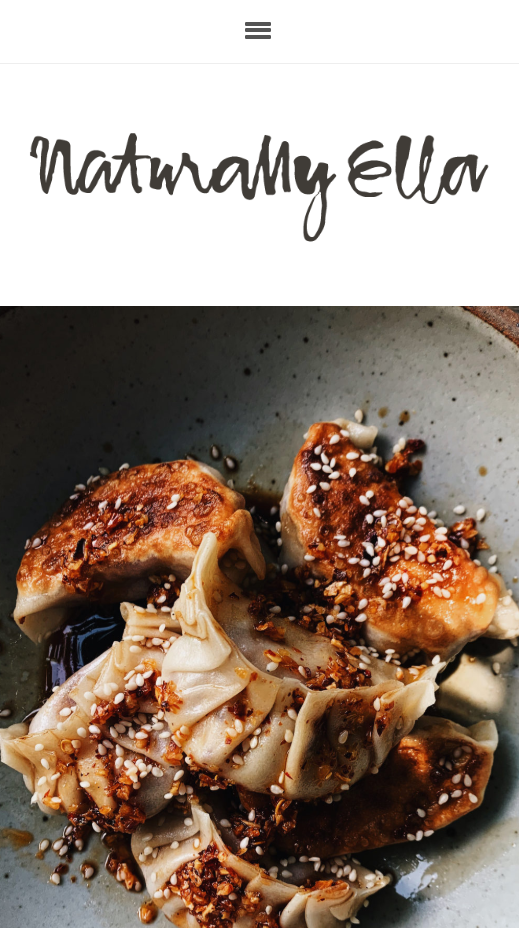

White Space and Clean Design
Naturally Ella
naturallyella.com This website exemplifies the use of White Space and Clean Design. The stark design of the title draws the eye upwards, the simple menu bar at the top serves it's purpose without question, and the perfectly centered photography draws viewers in. This Vegetarian blog serves up beauty in a healthy way: clean and fresh eating/ viewing.
Visual Hierarchy
The Avett Brothers
theavettbrothers.com
Whoever designed this layout knew you were a fan. The focus of the words in this instance, serve to point viewers effortlessly to the point. Which is what the Avett Brothers do: soulfully craft bluegrass-folkrock straight into your soul.
The Rule of Thirds
Atlanta Insider Blog
atlanta.net/hiking-trails
What's that in the top-left corner... the word "PARIS"? Someone is standing on top of the Eiffel Tower... on Ponce Street? Although it isn't as easy to see the Rule of Thirds displayed on this mobile screen, Atlanta Insider Blog makes use of a well-placed photo to grab viewers' attention, and almost pulls you outside to explore.hi